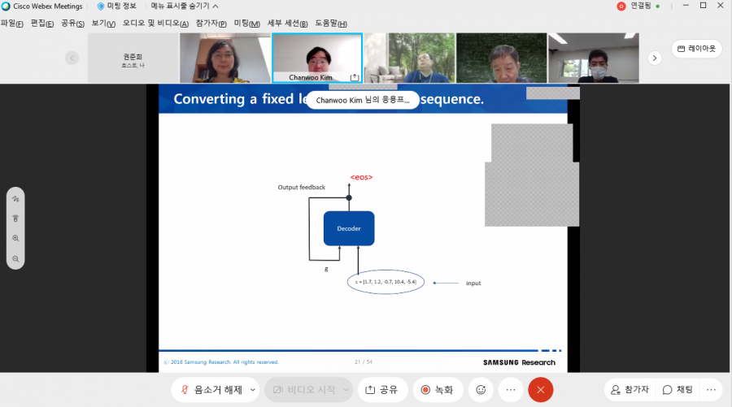
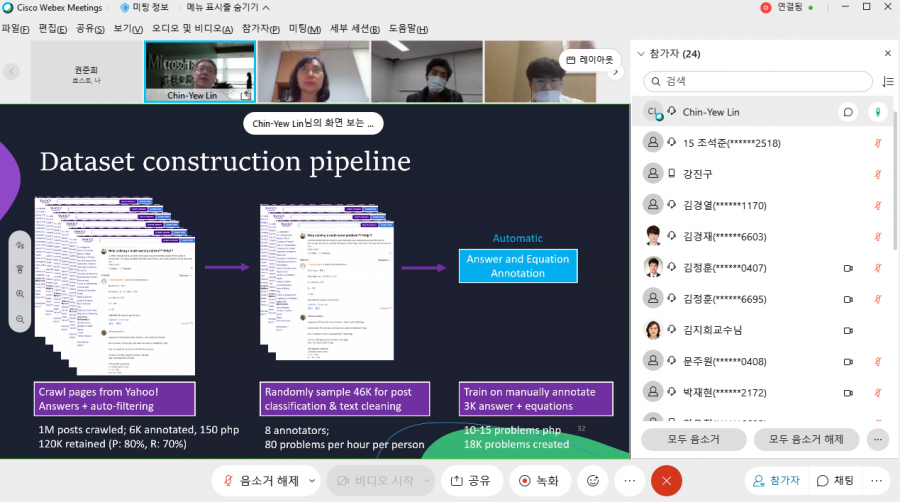
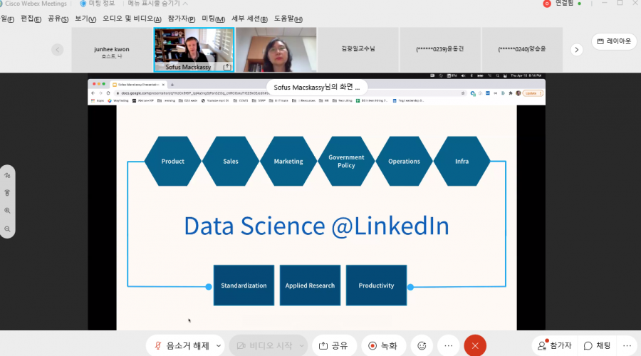
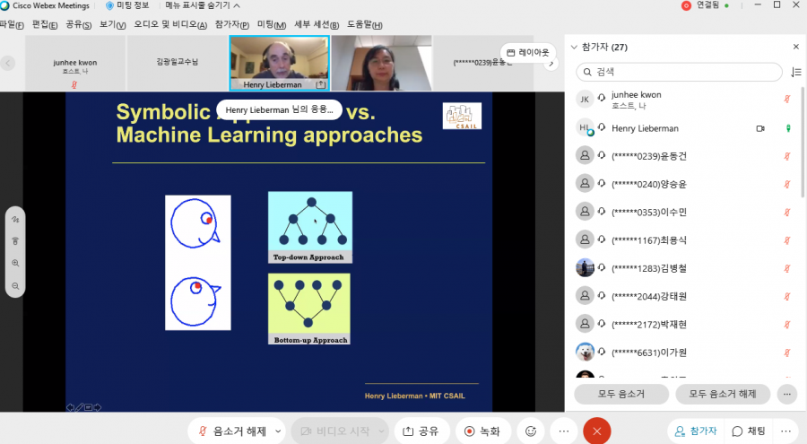

{% include image-gallery.html folder="./assets/img/seminar" %}
<!-- ---
layout: default_style
permalink: /gallery
published: true
---
<!DOCTYPE html>


<body>
<div class="responsive">
  <div class="gallery">
    <a target="_blank" href="./assets/img/seminar/0514Seminar.png">
      
    </a>
    <div class="desc">05/14 Online Seminar </div>
  </div>
</div>


<div class="responsive">
  <div class="gallery">
    <a target="_blank" href="./assets/img/seminar/0430Seminar.png">
      
    </a>
    <div class="desc">04/30 Online Seminar</div>
  </div>
</div>

<div class="responsive">
  <div class="gallery">
    <a target="_blank" href="./assets/img/seminar/0416Seminar.png">
      
    </a>
    <div class="desc">04/16 Online Seminar</div>
  </div>
</div>

<div class="responsive">
  <div class="gallery">
    <a target="_blank" href="./assets/img/seminar/0409Seminar.png">
      
    </a>
    <div class="desc">04/09 Online Seminar</div>
  </div>
</div>

<div class="clearfix"></div>

<!-- <div style="padding:6px;">
  <p>This example use media queries to re-arrange the images on different screen sizes: for screens larger than 700px wide, it will show four images side by side, for screens smaller than 700px, it will show two images side by side. For screens smaller than 500px, the images will stack vertically (100%).</p>
  <p>.</p>
</div> -->

</body>
</html> -->